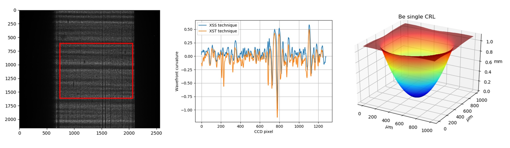

spexwavepy
- Version:
1.0.0
- Authors:
Lingfei Hu (USTC), Hongchang Wang (DLS)
- Dependencies:
Numpy
Scipy
cv2: This is OpenCV support for python.
natsort: This package is used for natural sorting.
- E-mail:
What is spexwavepy
Spexwavepy is an open-source Python package dedicated to the speckle-based wavefront sensing techniques for X-ray optics. Its name is the abbreviation of Speckle-based x-ray wavefront sensing python package. It covers a variety of X-ray speckle-based techniques, provides examples with real experiment data. This documentation will show users how to get the spexwavepy package, where to download the shared experiment data, how to run the examples, how to build your own python code using this package, etc. We hope this python package can help users to get familiar with the data processing for X-ray wavefront sensing using speckle-based techniques.
